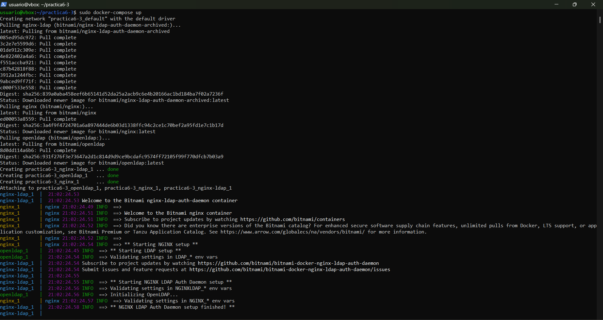

Práctica 6.3 - Despliegue de servidores web con usuarios autenticados mediante LDAP usando Docker y Docker Compose
Despliegue con Docker de NGINX con dominio de autenticación LDAP y OpenLDAP
Creación del index.html
Primero crearemos un directorio app con un index.html básico. Para ello simplemente ejecutaremos los siguiente comandos:
mkdir practica6-3
cd practica6-3
mkdir app
cd app
sudo nano index.html
Y en el index.html escribiremos lo siguiente:
<html>
<body>
<h1>¡Hola Mundo!</h1>
</body>
</html>
Configuración Nginx
Una vez hecho esto crearemos otro directorio con la configuración de Nginx que contenga el siguiente contenido:
server {
listen 8080;
location = / {
auth_request /auth-proxy;
}
location = /auth-proxy {
internal;
proxy_pass http://nginx-ldap:8888;
# URL y puerto para conectarse al servidor LDAP
proxy_set_header X-Ldap-URL "ldap://openldap:1389";
# Base DN
proxy_set_header X-Ldap-BaseDN "dc=example,dc=org";
# Bind DN
proxy_set_header X-Ldap-BindDN "cn=admin,dc=example,dc=org";
# Bind password
proxy_set_header X-Ldap-BindPass "adminpassword";
}
}
Para ello crearemos un directorio conf y en el crearemos el documento ldap_nginx.conf con la configuración indicada anteriormente

Aquí le estamos diciendo a Nginx lo siguiente:
-
Que escuche en el puerto 8080 las peticiones HTTP
-
Que cuando se acceda al sitio web, se solicite autorización en el directorio del sitio web llamado /auth-proxy
-
Se crea un nuevo location para ese directorio /auth-proxy y que es donde se realizará la configuración de cómo conectarnos a nuestro openldap, de acuerdo con la documentación oficial de Nginx a propósito de su módulo de autenticación:
-
Se indica la URL de nuestro openldap (es el nombre del contenedor que hemos levantado, ya que Docker tiene un DNS propio entre sus contenedores)
-
El DN (Nombre distinguido) base sobre el que se realizarán las búsquedas en openldap
-
El usuario y contraseña con el que nos conectaremos al openldap para realizar las consultas
Docker-compose
Una vez configurado Nginx procedemos a configurar el docker-compose
Para ello crearemos el archivo docker-compose.yml y le pegaremos el código siguiente que lo que hará es configurar un entorno con Nginx protegido por autenticación LDAP usando OpenLDAP.
version: '2'
services:
nginx-ldap: #
assets/images3/image: bitnami/nginx-ldap-auth-daemon-archived #
ports: #
- 8888:8888
nginx: #
assets/images3/image: bitnami/nginx
ports:
- 8080:8080
volumes: #
- ./app:/app
- ./conf/ldap_nginx.conf:/opt/bitnami/nginx/conf/server_blocks/ldap_nginx.conf
openldap: #
assets/images3/image: bitnami/openldap
ports:
- '1389:1389'
environment: #
- LDAP_ADMIN_USERNAME=admin
- LDAP_ADMIN_PASSWORD=adminpassword
- LDAP_USERS=customuser
- LDAP_PASSWORDS=custompassword
-
openldap - Servidor LDAP con usuarios predefinidos
-
nginx-ldap - Servicio de autenticación LDAP para Nginx
-
nginx - Servidor web que usa LDAP para autenticar usuarios
Antes de acceder a los recursos servidos por Nginx, los usuarios deberán autenticarse.

Inicialización de los contenedores
Una vez hecho esto simplemente tenemos que iniciar los contenedores con el comando sudo docker-compose up. Y una vez hecho esto accedemos a la siguiente url.
http://IP_Maquina_virtual:8080

Al acceder a la url anterior, nos pedirá las credenciales que hemos configurado anteriormente las cuales son:
- Usuario: customuser
- Contraseña: custompassword

Despliegue de PHP y Apache con autenticación LDAP
Archivo index.php
Para esto, primero crearemos un archivo que se llame index.php en el directorio practica6-3.
sudo nano index.php
En este archivo escribiremos el siguiente script:
<?php
echo "Ey, hola usuario autenticado por LDAP!";
?>

Dokerfile
Luego, dentro de nuestro directorio de trabajao crearemos otro directorio Docker con el archvio Dockerfile en el que añadiremos las opciones o directivas adecuadas para que se cree una assets/images3/imagen de Docker basada en PHP con Apache y configurar la autenticación LDAP en Apache.
El scrip que debemos meter sería el siguiente:
# ./Docker/Dockerfile --> directorio donde se encuentra este archivo
# Imagen base sobre la que vamos a trabajar
FROM php:7-apache
# Activamos el módulo LDAP de Apache ejecutand el siguiente comando
RUN a2enmod authnz_ldap
# Añadimos las reglas/configuración de LDAP al directorio conf-enabled de Apache
# (crearemos este archivo en el siguiente paso)
COPY Docker/ldap-demo.conf /etc/apache2/conf-enabled/
# Añadimos ayuda de depuración (debugging) en la configuración de apache
# En caso de necesitarlo, lo descomentamos para ejecutar el siguiente comando
# RUN echo "LogLevel debug" >> apache2.conf
# Establecemos el directorio de trabajo adecuado
WORKDIR /var/www/html/demo
# Configuramos Apache para usar la configuración ldap definida arriba, la copiamos de nuestro ordenador al contenedor
COPY Docker/.htaccess ./.htaccess
# Copiamos los archivos del proyecto que necesitamos, al contenedor
COPY index.php ./

Configuración LDAP
Posteriormente creamos el archivo ldap-demo.conf que contendrá toda la configuración LDAP. Aquí se establecerán los criterios de conexión con el contenedor Openldap, password y la URL.
# ./Docker/ldap-demo.conf
PassEnv LDAP_BIND_ON
PassEnv LDAP_PASSWORD
PassEnv LDAP_URL
<AuthnProviderAlias ldap demo>
AuthLDAPBindDN ${LDAP_BIND_ON}
AuthLDAPBindPassword ${LDAP_PASSWORD}
AuthLDAPURL ${LDAP_URL}
</AuthnProviderAlias>
Las directivas PassEnv al inicio del archivo, omiten nuestras credenciales y las pasa como variables de entorno al correr la assets/images3/imagen del contenedor.
Archivo de configuración Apache
Luego crearemos el archivo .htadccess que se encargará de configurar la autenticación básica en Apache para proteger el acceso al sitio web.
# .Docker/.htaccess
AuthBasicProvider demo
AuthType Basic
AuthName "Protected Area"
Require valid-user
Construcción de la assets/images3/imagen
Ahora, con el siguiente comando, construiremos la assets/images3/imagen en nuestro directorio de trabajo:
sudo docker build . -t docker-ldap -f ./Docker/Dockerfile

Corremos el contenedor
Ahora correremos el contenedor indicando las credenciales de nuestra cuenta LDAP mediante variables de entorno con la flag -e. En este caso probaremos con un servidor externo simulando que tuvieramos que integrar nuestro despliegue con un servidor ya existente en la empresa.
El servidor utilizado será https://www.freipa.org/page/Demo. En esta misma web se pueden consultar usuarios y contraseñas para poder acceder a la página.
sudo docker run -p 3000:80 --name ldap_demo -e LDAP_BIND_ON='uid=admin,cn=users,cn=accounts,dc=demo1,dc=freeipa,dc=org' -e LDAP_PASSWORD='Secret123' -e LDAP_URL='LDAP://ipa.demo1.freeipa.org' docker-ldap

Comprobación
Ahora solo tenemos que entrar en http://IP-EC2:3000/demo para comprobar que se ha desplegado el contenedor correctamente. Nos pedirá nuestras credenciales las cuales son:
-
usuario: admin
-
contraseña: Secret123
Una vez en la web veremos algo similar a la siguiente assets/images3/imagen:

Author: Jorge Pradillo Hinterberger